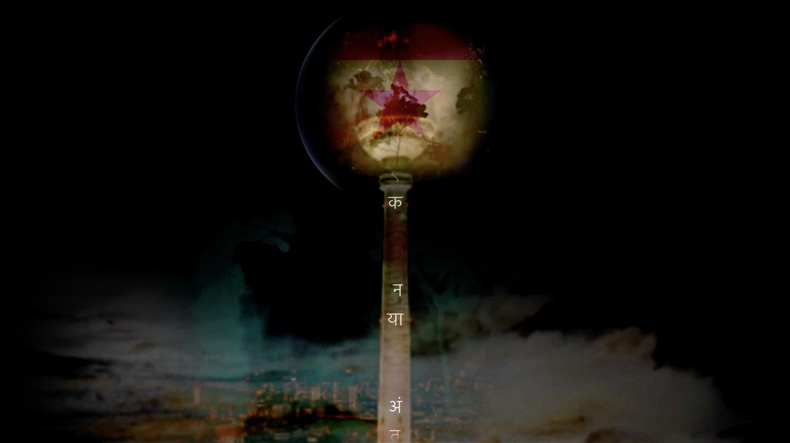
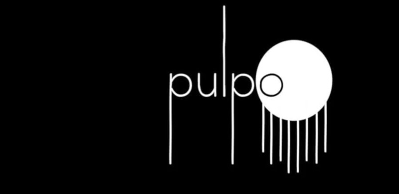
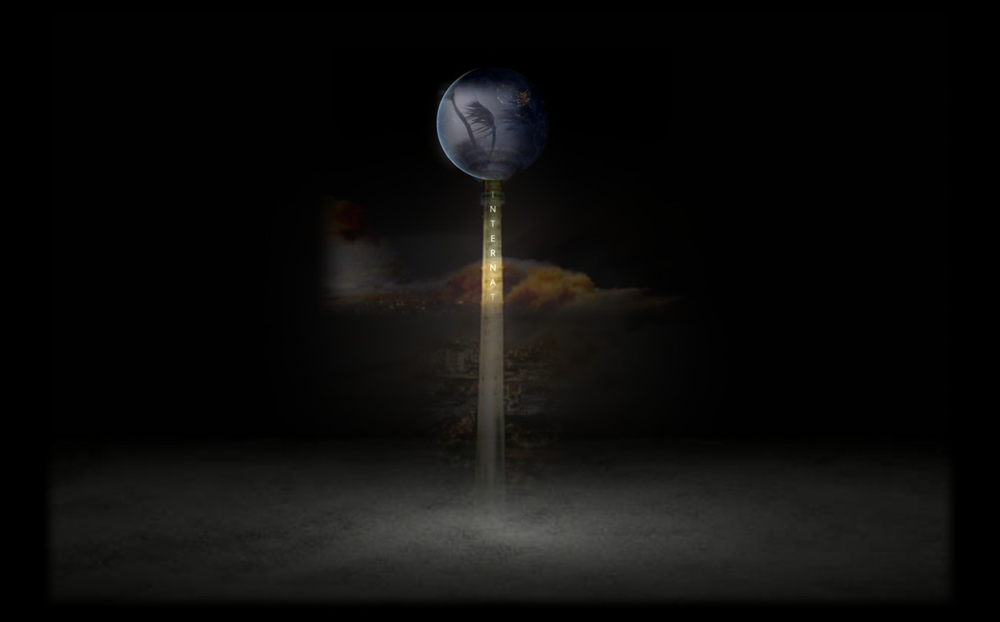
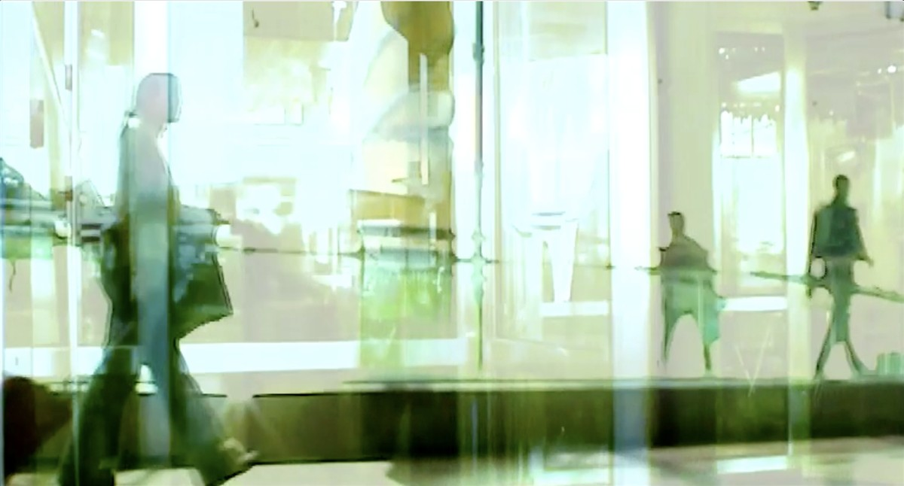

International Collective, Espacio Pulpo will host Petricor - Un Nuevo Internacionalismo, opening on 24th October
Roger Thorp Petricor, Un Nuevo Internacionalismo
October 24, 2025
Espacio Pulpo
Lluis Marti 34,
Palma de Mallorca,
Spain 07006
+34 871 02 08 99
[email protected]
www.olivenetwork.org/espaciopulpo
Press: Lucy Margaret
[email protected]
SYNOPSIS
Petricor, Un Nuevo Internacionalismo
Earth, hessian, oil painting, poetry, voices of reason, ambient sound, scent and Arcadian landscape featuring an imposing structure, abstracted, broken and forgotten, based on the Berlin TV Tower, a symbol of unification.
An immersive installation, the exhibition is located in three interconnected studios, each 12x5m aproximately, staging related moving image works that together tell the story.
Petrichor (/ˈpɛtrɪkɔːr/PET-rih-kor)[1]is the earthyscentproduced whenrainfalls on drysoil. The word was coined fromAncient Greekπέτρα(pétra) 'rock' orπέτρος(pétros) 'stone' andἰχώρ(ikhṓr), theethereal fluidthat is the blood of the gods inGreek mythology.
From an earlier text …..the odour '... was due to the presence of organic substances closely related to the essential oils of plants ...' and that these substances consist of '... the fragrance emitted by thousands of flowers ...' absorbed into the pores of the soil, and only released when displaced by rain. After attempts to isolate it, he found that it '... appeared to be very similar to, if not identical with,bromo-cedrenderived fromessence of cedar.'
Could the idea of A New Internationalism finally make sense of the internet? Speaking to the global population, grass roots, ground up and across borders. Beyond divisive short term national hierarchies. Advocating an earthly truth based on humility, ecology and kindness. Learning what we are via the arts, science and humanities. Inspiring populations by creating an informed awareness about what really matters, if we are to prosper, in an equitable way.

Biography excerpt by Dr Virginia Button
Artist Roger Thorp’s multi-media installations are unapologetically infused with a nostalgic romanticism. His work is informed by a deeply-felt belief that as a society, and as individuals, we need to come home, to remember a less rapacious and frenetic way of living, more connected on an emotional level to each other, and to nature. But if his work is a protest, it’s an optimistic and tender one. Interest in the autobiographical, in memory, the appreciation of beauty and poetic use of word and image to evoke emotional responses all feature in his work. Based in Cornwall, he has developed a body of work in which film (his original practice) is often combined with other media to create immersive installations that set out to speak directly to the heart rather than the head.
Roger Thorp is represented by Anima Mundi Gallery: Thorp’s work evokes a quiet and subtle sense of urgency to protect what is unique and authentic; in contrast to the pervasive erosion endemic to our contemporary world.
Recent exhibitions: A Beautiful Morning Anima Mundi Gallery - Estrella Azul de Carbano Pequeno SuspiroKaplan Projects, Palma - El Corazón del Soñador - Estudio Sant Feliu, Palma - The Dreamer's Heart at the Auditorium Parco della Musica in Rome - A Tinderbox of Fables in the James Turrell Skyspace at Tremenheere Sculpture Gardens, Cornwall - Fountain Road - European Tour: Berlin, Oslo, Copenhagen.
Artist’s Statement: The road, the environment, the injustice, the smallness of us, these elements repeatedly run through my work. I see the arts as an essential vehicle for creating a more equitable society and realigning our relationship with the natural world by illustrating our place in eternity. To slow down, dwell on the image, to discover the subject more deeply, finding quietude and reason. I hope to offer the viewer the chance to do this, if only for a little while.

Espacio Pulpo will host Petricor, Un Nuevo Internacionalismo, opening on 24th October
MAP